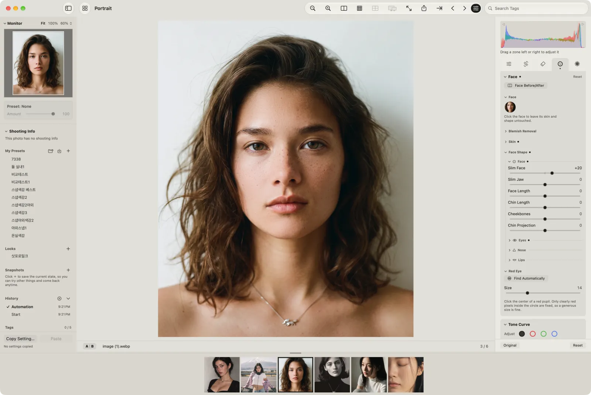
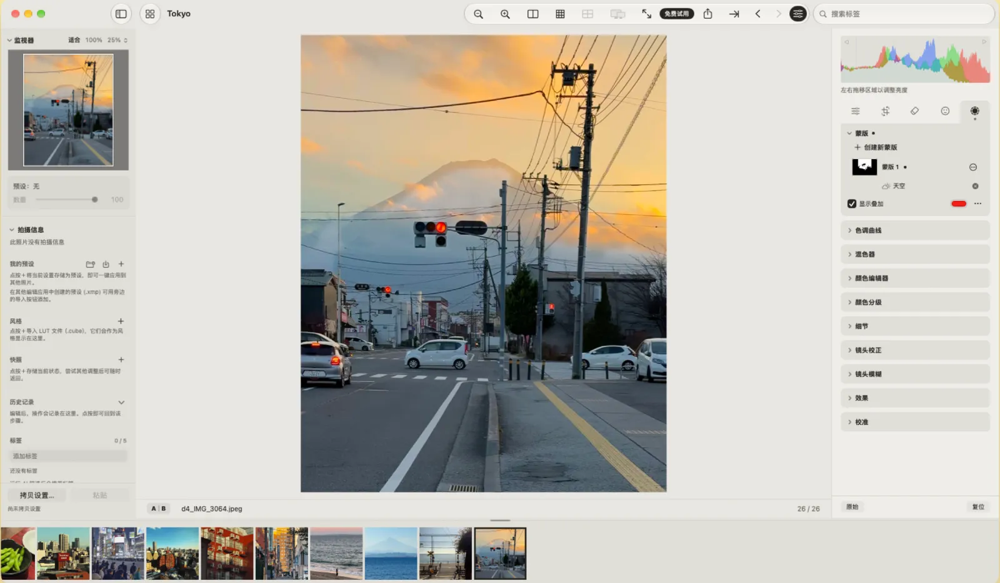
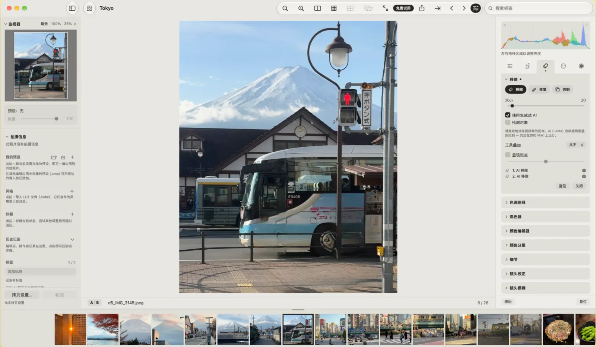

无需导入，直接打开文件夹
打开 SD 卡或外置 SSD 上的文件夹，照片立即出现。没有图库，没有数据库——编辑保存在照片旁的 XMP 文件中，原图保持不变。
打开文件夹即可开始：无需导入，直接浏览、筛选和冲印。照片绝不离开你的 Mac 或 Windows 电脑，所有 AI 都在设备上运行。
免费下载，30 天内免费试用全部功能。需要 macOS 26 或更高版本。 Windows 需 10（64 位）或更高版本。
如果出现“Windows 已保护你的电脑”，请点击“更多信息”→“仍要运行”。

为你的相机调校的 RAW — 针对 130 多款相机匹配的配置文件。曝光、色调曲线、颜色分级——成千上万张照片也能快速处理。
打开 SD 卡或外置 SSD 上的文件夹，照片立即出现。没有图库，没有数据库——编辑保存在照片旁的 XMP 文件中，原图保持不变。

磨皮、均匀肤色并保留质感。用滑块调整脸型、下巴、眼睛、鼻子和嘴唇，还能一次去除多张照片中同一个人的瑕疵。

一键选择主体、天空、背景或人物，并分别调整每个蒙版。通过添加、减去和交叉来精修。

涂抹想去掉的部分，它会按周围环境自动填充。所有 AI 都在本机运行，照片绝不会离开你的 Mac 或 Windows 电脑。

打开 AI 连接后，Claude 或 ChatGPT（Codex）可以直接操作 Butter Edit：从连拍中挑出最好的一张、按你描述的感觉调色、匹配参考照片的色调，还能添加蒙版、裁剪和导出——只要开口说。
直接购买版（Mac 和 Windows）的功能。需要你自己的 Claude 或 ChatGPT 账户。默认关闭；打开期间，AI 查看的小尺寸预览图会发送到你连接的 AI 服务。
“给这个文件夹里每组连拍中最好的一张打 3 星”
“把这张照片调成温暖的胶片感”
“按照桌面上参考照片的色调来调”
没有删除照片的命令。调整可以撤销（Mac 用 ⌘Z，Windows 用 Ctrl+Z）。
Butter Edit 是一款无需导入、没有图库目录的照片编辑器。打开 SD 卡或外置 SSD 上的文件夹，照片立即出现——浏览、筛选、冲印 RAW 并编辑。它专为快速处理成千上万张照片而打造。
不是订阅。买一次，一直用。
浏览、筛选和编辑始终免费。
点按“开始 30 天免费试用”，即可在 30 天内使用全部功能。试用结束后不会自动扣费。
试用结束后只有导出会被锁定。购买一次即可永久导出。
在 App Store 之外直接购买，可在 Mac 和 Windows 上使用，最多 3 台电脑。
比较两种购买方式 →
如有任何问题，请发送电子邮件: thefilmtravel@gmail.com
请写明你的电脑（Mac 型号和 macOS 版本，或 Windows 版本）、相机型号以及发生了什么。
App 可免费下载。点按“开始 30 天免费试用”，即可在 30 天内使用全部功能。试用结束后，浏览、筛选和编辑仍可继续使用；导出需要一次性解锁购买。不会自动扣费。
在登录同一 Apple 账户的 Mac 上，打开设置 →“购买”，点按“恢复购买”。
原始照片不会被更改。编辑保存在照片旁的 .xmp 文件中。
在 Mac 上，Butter Edit 可打开 macOS 支持的相机的 RAW 文件；在 Windows 上，可打开应用内置 RAW 解码器（LibRaw）支持的相机的 RAW 文件。新相机通常在 macOS 或应用更新后即可打开。
在 App 中控制通过 USB 连接的相机，并把新拍的照片直接存入你的文件夹。首次连接时请允许访问相机。